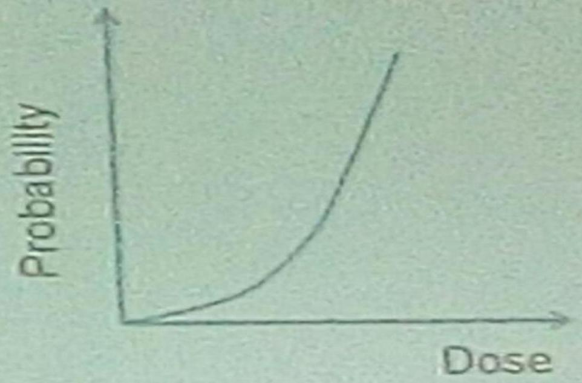

INTRODUCTION TO RADIATION SAFETY
DATE: 11/8/2016
IONIZING VS. NON-IONIZING RADIATION
-
Ionizing radiation include:
- X-rays and gamma rays
- Charged particles (electrons, protons, alpha particles)
- Neutrons
-
Non-ionizing radiation
- Ultra-sound
- Optical radiation
- Radiofrequency radiation
SOURCES OF IONIZING RADIATION
-
Natural sources include:
- Cosmic radiation from outer space
- Terrestrial radiation in soil, rocks, water ( these sources constitute natural background)
-
Artificial sources
- All man-made radiation
EXPOSURE OF POPULATIONS
- The most important source is natural background.
- From artificial sources, medical exposure is most important
- Within medical exposure, X-ray diagnosis is the leading contributor
MODALITIES OF EXPOSURE
- External exposure/Irradiation - the radiation source is outside the body e.g. X-ray
- There can also be external contamination when radionuclides are spread on the skin
- Internal exposure - the radiation source is inside the body e.g. Nuclear medicine (injection of a radiopharmaceutical)
- This can take place because of inhalation or injection of radionuclides
BIOLOGICAL EFFECTS OF IONIZING RADIATION
- Evidence exists for biological effects
-
Effects at cellular level include:
- Cell killing
- Mutations
- Loss of proliferative capacity
- Cellular effects may affect organ/tissue function
- Effects on organism, include possible death
CLASSIFICATION OF RADIATION EFFECTS
- Acute vs. delayed
- Somatic, Hereditary or fetal/embryonic
- Somatic effect occurs in the irradiated person
- Hereditary effects occur in the descendants of the irradiated person.
- Fetal effects occur in the unborn child of an irradiated pregnant mother.
- Deterministic vs. Stochastic
- Deterministic effects have a threshold dose below which they do not occur. Severity is dose-dependent
- Stochastic effects have no threshold dose. The probability of occurrence depends on dose. Severity is independent of dose.
Radiation Effects Examples
Deterministic
(Erythema, Tissue necrosis, Cataract, Syndromes
Stochastic
(Cancer, Leukaemia, Hereditany.
IMPLICATIONS
- NO amount of radiation exposure (no matter how little) is completely safe
- Even very low doses of radiation may induce severe health detriment (carcinogenesis and hereditary effects are stochastic)
- All unnecessary exposures to ionizing radiation should be avoided (principle of justification)
- All necessary exposures to radiation should be kept As Low As Reasonably Achievable (ALARA principle)
AIMS OF RADIATION PROTECTION
- Prevent the occurrence of the deterministic/threshold effects
- Limit the probability of occurrence of stochastic/non-threshold effects
- Philosophy radiation protection: Justification of practices Optimization of procedures Dose limitation
CATEGORIES OF RADIATION EXPOSURE
- Occupational exposure - Exposure of designated radiation workers in normal courses of their duties - Dose limits for radiation workers apply - Monitoring of radiation doses is required
- Medical exposure - Exposure of patients during diagnostic or therapeutic procedures, based on medical decisions - Include exposures from artificial body implants emitting ionizing radiation - When radiation workers are exposed as patients, that component or exposure is classified as medical exposure - No dose limits prescribed for medical exposure - However ALARA principle applies; guidance dose levels should be noted - Radiation dose monitoring not done on routine basis.
CONT.
- Public exposure - Refers to non-occupational, non-medical exposure of members of the general public - Dose limits for members of the general public apply, for planning purposes - No radiation monitoring
RADIATION PROTECTION OF WORKERS
- Radiation workers are: Occupational exposed Specially trained Subject to prescribed dose limits
- Strategies: Training of personnel Planning of radiological facilities Facility design e.g. structural shielding Equipment selection
OPERATION PRINCIPLES
- Minimize time of exposure (dose received is proportional to time)
- Maximize distance between the source and workers (dose varies inversely as square of distance)
- Use of physical shielding between source and worker (extent of protection varies with barrier material, barrier thickness and radiation quality). The physical barrier has the following features: Z value Density value Thickness
PERSONAL PROTECTIVE CLOTHING
- Lead rubber aprons, gloves (minimum lead equivalence is 0.25 mm)
- Thyroid shields
- Spectacles
MANAGEMENT RESPONSIBILITIES:
- Departmental regulations
- Personnel monitoring
- Quality assurance
PROTECTION OF PATIENTS IN X-RAY DIAGNOSIS
- X-ray diagnosis contributes largest proportion of artificial exposure to populations
- Collective doses to populations depend on frequencies of radiological examinations and on mean doses per examination
- Very wide variation in patient dose are observed
STRATEGIES OF PATIENT PROTECTION
- Clinical judgment (necessity of examination)
- Trained personnel
- Radiological equipment in good condition
- Performance specifications
- Maintenance
- Quality assurance programs
- Sensitive image receptors
- Adequate preparation, proper instruction or patient
- Proper performance of examination
- Positioning, views, exposure factors. Limitation of beam size, gonad shielding
- Proper film processing practice
- Through quality control programs, minimize repeat examinations
- Consider alternatives of X-rays to use when appropriate e.g. ultrasound
SENSITIVE PATIENT GROUPS
- Children
- Pregnant female
PUBLIC PROTECTION
- Involved institutions should put in place regulations that protect the public from radiation exposure.
SAFETY IN DIAGNOSTIC ULTRASOUND
- Biological effects observed with animal experimentation using very high intensities of ultrasound
- Biological effects may be due to: Tissue temperature elevation Formation of bubbles in liquids
- Diagnostic ultrasound employs beam intensities well below the thresholds for observed effects
- Diagnostic ultrasound is considered to be a safe method of medical imaging, with a wide margin of safety
SAFETY IN MRI
- Risk of biological effects considered remote
- The environment around powerful magnets presents some risks to patients, relatives and staff Attraction of objects into magnet (ferromagnetic missiles) Rapid evaporation of cryogens
- Restricted access ( 0.5 mT ) if necessary, monitor entrants
- Warning signs and symbols
- Screening of patients
- Pre-exam instructions
- Design with faraday cage Confines high magnetic field to restricted zone Keeps out extraneous sources of electromagnetic fields
- Design to facilitate escape route in case of cryogen boil-off
- Staff awareness and good practice
- There should be warnina sians and svmbols to indicate the presence of maanetic fields.